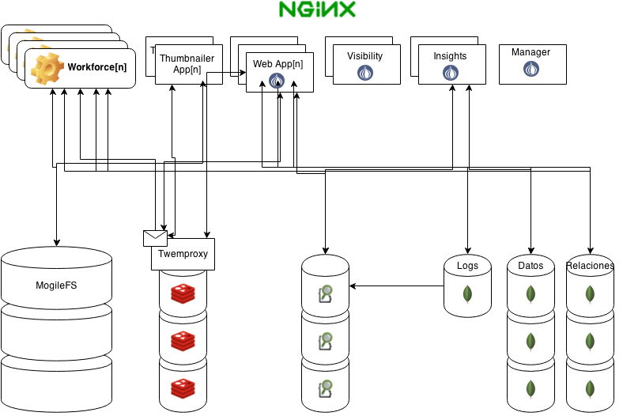

Buenas practicas en desarrollo
Diego Kuperman | @freekey
Hola!
Buenas practicas en desarrollo
Diego Kuperman | @freekey
Best coding practices are a set of informal rules that the software development community has learned over time which can help improve the quality of software.
-- McConnell, Steve (2004). Code Complete (Second ed.)
Buenas practicas en el desarrollo de proyectos para internet
Diego Kuperman | @freekey
Buenas practicas en el ciclo de desarrollo de proyectos para internet
Diego Kuperman | @freekey
<Me>
Pegado a los ordenadores hace 34 años
Logo
Basic de comodore 64
Interlink
Soporte / Servicio técnico / Novell networks
BBS's / Fidonet
Mensajeria global
ISP (muy cutre)
FreeBSD / Unix philosofy / Networking
Terra Networks / Telefónica
Web performance / Perl / MySQL / ...
Freekeylabs
MVC, Proyectos, OSS Contributor
CPAN Author
...
Open source contrubutor
Perl / Javascript / ...
Kedines
Co-founder / Tech lead
Freelance
Sistemas / Desarrollo
Performance / Rescate web / Formación
Soysuper.com
Co-Founder / CTO / Tech lead
</Me>
Ideas guía
Los prototipos no existen
Hacer lo que hace el software libre
Hacer lo que hace Unix
Dividir y conquistar
Crear es mas facil que cambiar
Elegir y cuidar las herramientas
Deciciones informadas (métricas)
Automatizar todo!
Deuda tecnológica
Ninety-ninety rule
The first 90 percent of the code accounts for the first 90 percent of the development time. The remaining 10 percent of the code accounts for the other 90 percent of the development time.
— Tom Cargill, Bell Labs
Temas para hoy...
Arquitectura
Nuestro código
Automatización
Metodologías
Comunicacion y equipos
...
Arquitectura
Software architecture
Software architecture refers to the high level structures of a software system, the discipline of creating such structures, and the documentation of these structures. These structures are needed to reason about the software system.
https://en.wikipedia.org/wiki/Software_architecture
Web básica
- 1 web server
Web simple
- 1 web server / proxy
- n web apps
- 1 base de datos / storage
Web simple con tráfico
- 1/2 web server / proxy / cache
- n web apps
- 1 base de datos / storage
Web (compleja)
- Balanceadores
- n web server / proxy / cache
- n web apps
- n base de datos
- cache distribuido
- Assets / CDN
- Job queue
- n mobile apps
Proyecto web (simplificado)
- n frontales
- Assets / CDN
- n http apps/apis
- n mobile apps
- n bases de datos
- 1 cache distribuido
- 1 Job queue (n workers)
- Automated deploy
Proyecto web con tráfico
- n frontales
- Assets / CDN
- n http apps/apis
- n mobile apps
- n bases de datos
- 1 cache distribuido
- 1 Job queue (n workers)
- Automated deploy / Auto-escalado / ...
...
Soysuper.com: 25 Máquinas / 200 VMs
10 M eventos
273 workers
138 colas
2 redis
1.5 M imagenes originales
7 M thumbs
15 Nodos
577 m productos unicos
857 m productos origen
3 + 3 Nodos
58 M relaciones
11 Nodos
39.6 M historicos
180 M precios
3 / 3 Nodos
39.6 M historicos
180 M segmentos
3 / 3 Nodos
4 TB indexed logs
12 Nodos
...
4 P
Arquitectura de nuestras apps
Elección de lenguaje/s
y componentes...
Web monolítica
MVC
Fat models, thin controllers!
Job queues y mensajeria
No hagas hoy lo que puedes hacer mañana
Asincronía vs Multiproceso
Microservicios
Dominios y contratos
Optimiza para el fallo
Fail early and loud!
Fallos en una cola async
Retry limit / Failed job
Reliability
de nuestro software
Código desacoplado y testeable
DRY
Wrap wrap wrap!
Wrap!
sync con HTTP
Configuracion desacoplada
Logs desacoplados
rSyslog / rabbit-mq / ...
Código limpio
Convenciones claras
Tests
-Ofun
http://archive.oreilly.com/pub/post/ofun.html
-Ofun
Para los devs
...
Buenas prácticas en el código
Love our code!
KISS
Menos es más
There are two ways of constructing a software design: one way is to make it so simple that there are obviously no deficiencies; the other way is to make it so complicated that there are no obvious deficiencies. The first method is far more difficult.
-- Hoare, C.A.R (1981). "The Emperor’s Old Clothes"
Coding Standards
Espacios o tabs?
Cuantos espacios?
Naming conventions
Camel case o Snake case?
Llaves arriba o abajo?
Documentacion con POD, comments, jsdoc... ?
Cambia segun el lenguaje?
Control de versiones (git)
Interfáz para nuestro repo
Github / GitLab / Googs / Jira / Phabricator / ...
Interfáz para nuestro repo
Issues / Tickets / Milestones / Kanban
Feature branch
Nueva feature = nueva rama
Mantener las ramas mergeables
git pull --rebase origin master
Master o la rama que sea siempre desplegable!
Cada commit es un solo proposito
Idealmente vinculado a un issue/ticket
La historia importa
Squash it!
git rebase -i HEAD~4Squash it!
git merge --squash feature-branchGit pre-commit hook
Feature toggle
A/B
Canary releases
Código desacoplado
Una librería/clase por proposito
Definir bien las dependencias
En cada componente
Composer / package.json / bundler / ...
Definir bien las dependencias
En cada componente
Docker
Documentación
Con y para el código
Testing
Código testeable
Prepare for testing!
Tests unitarios
"testing the smallest isolatable unit of an application"
Feature testing & TDD
Auto-test
Regression tests & bug fixing
Integration tests & Mocking
To test or not to test!?
Tests are code!
...
Buenas prácticas en servicios http[1]
https
Signed cookies
< 200ms
< 500ms
Asset cookieless domains
Domain sharding (2)
Asset cache max
Defer JS loading
Expensive requests
Reduce http calls
Reduce load size
Minify & concatenate
JS & CSS
Image sprite
Image fonts
Inlining
Data URIs
Future is now!
http2
spdy
h2
Cheap requests
Binary protocol
Headers compression
HPACK
Fully multiplexed
One connection to rule them all!
server push
Antipatterns
Minify & concatenate
Image sprite
Inlining
Data URIs
Domain sharding
servers
NGINX
Apache
H2O
https://github.com/http2/http2-spec/wiki/Implementations
...
Automatización
DevOps way!
DevOps
DevOps (a clipped compound of development and operations) is a culture, movement or practice that emphasizes the collaboration and communication of both software developers and other information-technology (IT) professionals while automating the process of software delivery and infrastructure changes.
https://en.wikipedia.org/wiki/DevOps

Devs ♥ Ops
Each service has a team associated with it, and that team is completely responsible for the service—from scoping out the functionality, to architecting it, to building it, and operating it. -- Werner Vogels (2007)
https://queue.acm.org/detail.cfm?id=1142065
Giving developers operational responsibilities has greatly enhanced the quality of the services, both from a customer and a technology point of view. -- Werner Vogels (2007)
https://queue.acm.org/detail.cfm?id=1142065
PaaS
Platform as a service
Datacenter as a service
AWS / Azure / GCP / DO / OpenStack
Virtualización / Docker / K8s
Empieza por el desarrollo
Automatizar la creación del entorno completo
Bash / Capistrano / Chef / Ansible / Puppet / Docker
Deployable units
Roles / Plugins
Deployable units
Redis
Mysql
API
App
Users
Networking
Configuration
...
Entornos reproducibles
Dev: docker / vagrant
Staging / Pre / Pro
Despliegue automatizado
Despliegue automatizado
[1/2]
- Crear instancia
- Instalar configuraciones
- Instalar dependencias
- Instalar nuestro software
- Build
- Testear instancia
- Añadir al balanceo
- Quitar instancia vieja si existe
Despliegue automatizado
[2/2]
- Actualizar nuestro software
- Actualizar dependencias
- Actualizar configuraciones
- Build
- Restart
Logs centralizados
Rsyslog / LogStash + Beats / Papertrail
Distributed tracing
Request-id / Zipkin
Errores centralizados
Sentry / Pagerduty
Monitorización
Nagios / Sensu / Grafana / Pingdom
Build server
Build & test
Travis-ci / Jenkins / gitlab-ci / ...
travis.yml
language: perl
perl:
- "5.26"
- "5.24"
- "5.22"
- "5.20"
services:
- redis-server
before_install:
- "cpanm --notest Dist::Zilla Pod::Elemental::Transformer::List Pod::Coverage::TrustPod"
install: "dzil authordeps | cpanm --notest && dzil listdeps | cpanm --notest"
script: "dzil test --release"
CI Workflow

Auto escalado
Containers
Docker / Kubernetes / Consul / CoreOS / AWS
Service discovery
etcd / Zookeeper / Consul / k8s
Chatbot
Glue them all!
Jabber / Hangout / Slack / IRC / ...
Hubot
Chatbot / Chatops
> deploy app@feature to staging
...
Técnicas
y
Metodologías
XP
extreme programming
12 principios
- Planning Game
- Pair Programming
- Test Driven Development
- Whole Team
- Continuous Integration
- Design Improvement
- Small Releases
- Coding Standards
- Collective Code Ownership
- Simple Design
- System Metaphor
- Sustainable Pace
YAGNI
You aren't gonna need it
Agile / Scrum
Planning game
Guias de estilo
Evitar silos
Código compartido
Pair programming
Con rotación!
TDD
Refactoring
Small releases
Release early, release often
Integración continua
Delivery continuo

...
...
...
Revisiones de código
Pull requests
Chaos monkey
...
Comunicación
y
Equipos

Poca gente
=
Poca comunicación
Two pizza teams
(Jeff Bezos)
Onboarding
Gracias!
Preguntas?
...
Ex-1
https://github.com/diegok/coding-examples-cto
Ex-2
Desacoplar
Ex-3
Desacoplar de verdad
Ex-4
Chatops
- https://api.slack.com/custom-integrations/legacy-tokens
- https://api.slack.com/events
...
Código desacoplado
Modelo ODM
Modelo Search
Plugins y Roles
Libreria para cada problema
Roles/Traits/Mixins
FTW!
In computer programming, a trait is a concept used in object-oriented programming: a trait represents a collection of methods, that can be used to extend the functionality of a class. Essentially a trait is similar to a class made only of concrete methods that is used to extend another class with a mechanism similar to multiple inheritance, but paying attention to name conflicts, hence with some support from the language for a name-conflict resolution policy to use when merging.
Traits provide a "simple conceptual model for structuring object-oriented programs"[1][2] similar to mixins. Traits provide a simple way to create classes that reuse behavior from software components.
Traits are somewhat between an interface and a mixin: an interface is made only of method signatures, while a trait includes also the full method definitions, on the other side mixins include method definitions, but they can also carry state through attributes while traits usually don't.
yada yada...
Web App: Cache plugin
Redis LRU + Sereal
Async helper
my $value = $self->cached( cache_key => sub{ ... expensive op ... });
my $value = $self->cached( other_key => sub{ ... }, '2h');
my $value = $self->cached( other_key => sub{ ... }, '5m');
my $value = $self->cached( other_key => sub{ ... }, '1d');